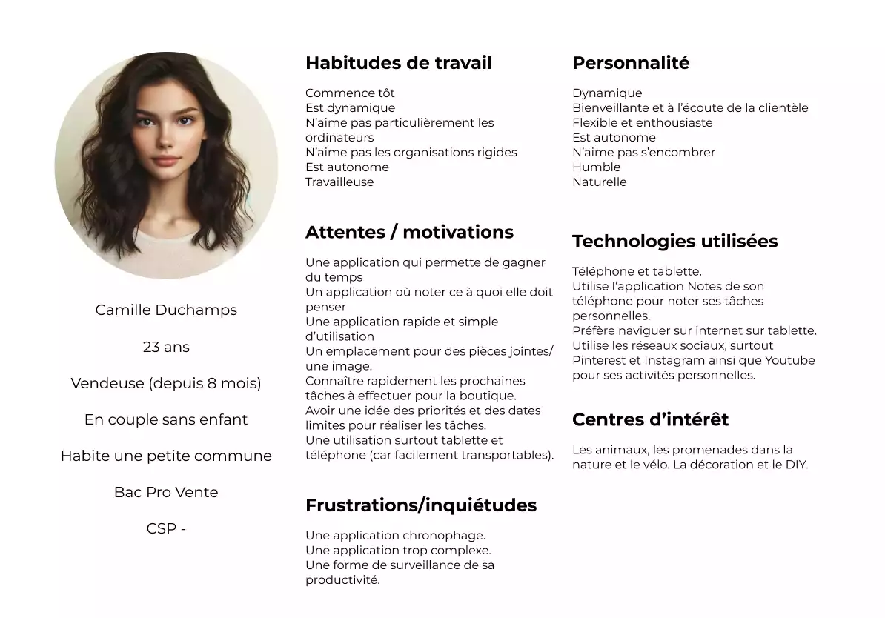

Maquette To Do List
Contexte

L'entreprise Safrio, petite structure familiale qui existe depuis 15 ans, est spécialisée dans la vente de savonnettes bio. Afin d'améliorer la gestion de ses tâches, elle souhaite acquérir une application web permettant de s'organiser à l'aide de "To do list". Le développement de l'application doit cependant être rapide.
Processus
- Veille concurrentielle
- Rédaction d'un persona
- Choix des fonctionnalités
- Création de la charte graphique
- Maquettage avec Figma
Veille concurentielle, persona et choix des fonctionnalités
La veille concurrentielle, effectuée auprès d'une dizaine d'applications, a permis de mieux connaître les points forts des applications concurrentes et d'identifier les fonctionnalités les plus proposées aux utilisateurs.
Un persona a également été rédigé afin de mieux appréhender les attentes et les peurs éventuelles d'un salarié de l'entreprise Safrio vis-à-vis de ce nouvel outil.
Ces deux premières étapes ont permis de retenir les fonctionnalités suivantes :
- création de plusieurs to do list
- suppression d'une to do list / d'une tâche
- possibilité d'indiquer qu'une tâche est prioritaire
- ajout d'un descriptif
- ajout une pièce jointe à une tâche
- recherche de tâche ou de to do list
- ajout d'une date de fin à la tâche
- calendrier avec tâches du jour
- étiquette rattachant la tâche à sa to do list
- tâche cochée et rayée une fois achevée
Création de la charte graphique
J'ai choisi de construire la charte graphique autour de la couleur bleu lavande, couleur présente sur la photographie en fond d'écran de la page de connexion à l'application, mais également utilisée pour colorer les savons. Le bleu est par ailleurs une couleur appréciée par une grande majorité de personnes et est souvent associé à ce qui est organisé et structuré (se reporter à la théorie du management par les couleurs). Pour toutes ces raisons, le bleu a été mis au coeur de la charte graphique.
Maquettage sous figma
Les maquettes ont été réalisées pour les supports suivants :
- ordinateur de résolution 1440 x 1024,
- tablette de résolution 834 x 1094,
- mobile de résolution 320 x 568.
L'application web, via son responsive design, pourra être utilisée par l'ensemble des salariés de Safrio, quelque soit leur support de prédilection.
Vous trouverez ci-dessous les visuels des trois maquettes, sur un format ordinateur, tablette et téléphone.
Les maquettes sont également consultables en cliquant ici .
.